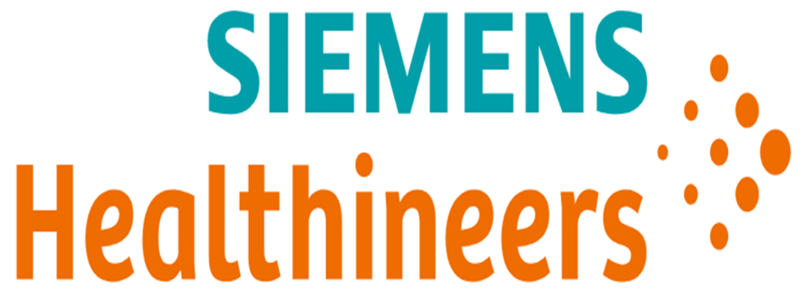

Northeastern University, Boston, MA
B.S. in Computer Engineering and Computer Science (CE/CS) Expected May 2024
Coursework: Linear Systems, Statistics, Computer Systems, Embedded Design, Object Oriented Design, Algorithms and Data, Foundations of Data Science, Database Design, Fundamentals of Software Engineering
Johnson & Johnson - Abiomed, Danvers, MA
Data Engineering Co-op Jul-Dec 2023
- Developed an object-oriented Python tool – utilizing, Pandas, Openpyxl, Tkinter, and regular expressions – to automate the composition, reformatting, and visual layout of complex medical log data
- Automated the cloud-based extraction of targeted medical log data – utilizing multiple APIs, Pandas, and SQL queries - to save an estimated 177 hours for the global post-market engineering team in 2024
- Collaborated with other Data Engineers on a Python data pipeline that ETLs (extracts, transforms, & loads) data and audits changes from the Salesforce database in MSSQL server tables to differentiate device failure modes
- Built a Python script that parsed frequencies of user-interface events in over 3,000 device failure-linked logs and cross-referenced results with the Software Engineering Team’s graphical data in JAMA to aid data visualization
Siemens Healthineers – Endovascular Robotics, Newton, MA
Software Development Engineering Co-op Jun-Dec 2022
- Performed over 50 formal system and network verification tests – utilizing Windows Boot Manager and SSH via PowerShell terminal - for a remote vascular interventional surgery, to prepare it for clinical studies
- Created an Excel Visual Basic Macro that synchronized with an integrated Python Selenium program to scrape HTML components from Helix ALM’s webpage to streamline and plot company-wide testing metrics.
- Developed an algorithm using Python and Linux command-line utilities that parsed 500+ client-facing files to reveal complex strings relating to software issues within the team’s Azure DevOps Git repository
About Me
Hi, my name is Jasper Kimball!
I am a Computer Engineering and Computer Science student at Northeastern University. I am seeking full-time employment after I graduate in May 2024. My expertise is in data engineering, software development, and embedded systems. I have interests outside of my field including economics, global politics, and psychology.
Please check out the 'Resume' and 'Web Projects' tabs for more information about my experience and education.

